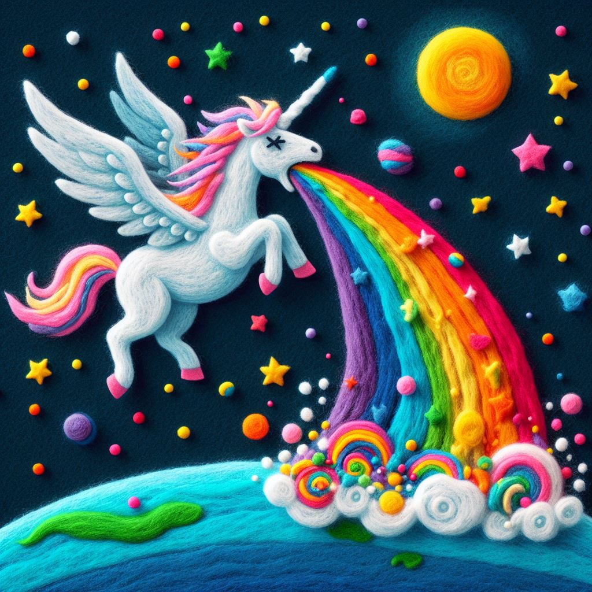

No hay nada más punk que infiltrarse en el sistema para cambiarlo desde dentro. Con amor y neuronas bien locas.
Vivimos en una cultura donde todo tiene que ser arcoíris y unicornios. Felicidad por bandera, conformismo como virtud. Y si no encajas en ese molde, el problema claramente eres tú.
hAppYpUkIng nace de esta herida. Del dolor de ser diferente. De que te etiqueten como "muy sensible", "exagerada", "especialita"... de que te exijan esforzarte por adaptarte a un sistema que ignora tus propias necesidades y te hace sentir rota.
El unicornio de hAppYpUkIng está muerto por dentro. Pero sigue vomitando arcoíris y felicidad. Porque eso es lo que se nos pide. Y a veces, funciona.
No es estética random — es una declaración.
El sistema educativo falla a una parte enorme del alumnado. Por inercia, por recursos, por una concepción del aprendizaje que lleva décadas sin actualizarse. Industrialización. Contenido estático. Memorización. Un solo ritmo y formato para cerebros muy distintos.
hAppYpUkIng es la respuesta personal a eso. Si no puedo cambiar el sistema desde fuera, me cuelo dentro. Con herramientas interactivas, visuales, no lineales. Con una estética cool que no infantiliza. Con pedagogía de verdad detrás de cada decisión de diseño.
Y con IA. No como hype — como herramienta real de atención a la diversidad. La IA puede generar contenido adaptado, múltiples niveles de dificultad, explicaciones alternativas. Puede hacer en horas lo que antes requería meses de trabajo especializado. Eso es lo que más me importa de esta tecnología: su potencial para atender a quien el sistema ya dejó atrás.
No hay equipo. No hay financiación. No hay una startup detrás con deck y ronda de inversión.
Hay una persona neurodivergente que un día decidió que si iba a hacer recursos educativos para sus hijos, también podía compartirlos con el mundo. Y que la combinación de pedagogía real, buen diseño e inteligencia artificial podía producir algo que valiera la pena.
Todo lo que ves aquí — cada herramienta, cada interacción, cada decisión de diseño — es el resultado de esa combinación. Cerebro humano con estructura no lineal + IA como amplificador. No sustitución: colaboración.
Estoy cansada del relato binario de la neurodivergencia. El de los superpoderes y el del talento especial. El de las dificultades y el de la superación. Ninguno de los dos es honesto. Ninguno me identifica totalmente.
La ND, en mi, es una bendición y una maldición dependiendo del día y del entorno. Es lo que me hace ver el mundo de una manera que la mayoría no ve. Es también lo que hace que algunos días solo existir sea un trabajo a tiempo completo.
Lo abrazo como lo que es: estructura, semilla y ADN de innovación. No a pesar de las dificultades — con ellas incluidas. Sin romanticismos y sin disculpas.
La neurodivergencia no es un rasgo que lleve con orgullo los días buenos y esconda los malos. La llevo entera. Y eso es exactamente lo que hace hAppYpUkIng.
Los recursos de hAppYpUkIng son gratuitos, sin registro, sin instalación, sin anuncios. Siempre.
El conocimiento que atiende a quien el sistema ya dejó atrás no puede estar detrás de un muro de pago. Si algo de lo que hay aquí le sirve a un alumno, a un docente o a una familia — eso ya justifica todo el tiempo invertido.
El código es abierto en GitHub con licencia CC BY-NC-SA 4.0. Úsalo, adáptalo, mejóralo. Cita la fuente.
Todas las herramientas de hAppYpUkIng son ficheros HTML autónomos. Sin frameworks, sin servidores, sin bases de datos. Una decisión deliberada con tres consecuencias importantes:
Funcionan sin conexión. Descarga el fichero y úsalo donde quieras — en clase, en casa, sin wifi. El conocimiento no debería depender de una buena señal.
Son fáciles de ampliar. El contenido está separado del código. Las herramientas que lo permiten usan YAML — un formato de texto legible que cualquiera puede editar. Sin tocar una línea de código.
Cualquiera puede contribuir. HTML, CSS, YAML — tecnologías con décadas de documentación y comunidad. Y para quien no quiera aprender ninguna de las tres: un prompt bien construido y un chatbot generan contenido nuevo en minutos. La barrera de entrada es intencionalmente baja.
La herramienta más poderosa es la que llega a más manos. No la más sofisticada.
hAppYpUkIng es un proyecto pequeño con ambición grande. Estas son las formas más útiles de colaborar:
Contacto directo: h4ppypuk1ng@gmail.com